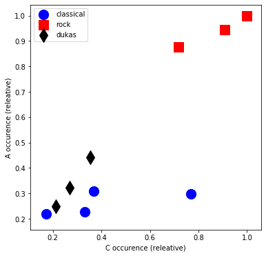
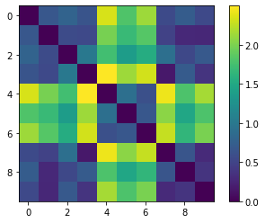
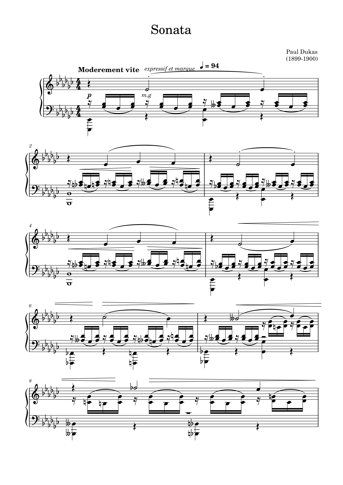
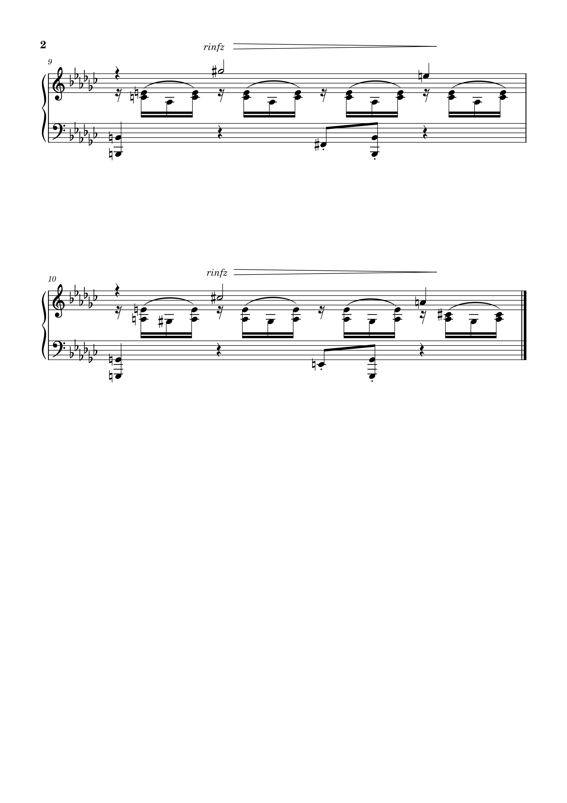
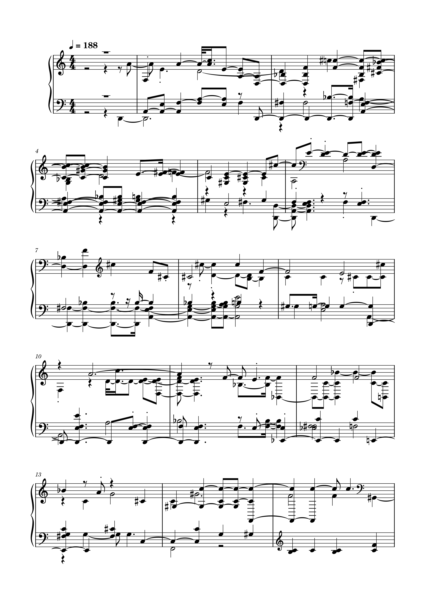
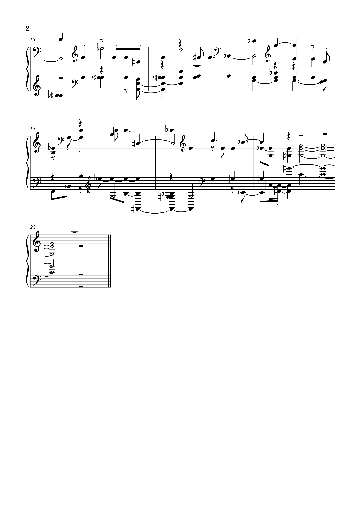

Week 10: Audio Similarity and Transcription
 For this task I used the 3 separate parts of Paul Dukas' 'The Sorcerers Apprentice' and inputted them into the Python notebook. From this 2D visualisation graph which highlights the occurances of notes A and C in different genres of music, we can see my chosen tracks are clusted near the other ‘classical’ tracks. This makes sense as Paul Dukas is a classical composer and the piece chosen is classicalI then edited the similarity matrix given in the Python notebook. The edited version is shown here. In this matrix, tracks 7-9 correspond to my tracks whilst tracks 0-3 are pieces which can be classified as 'classical' and tracks 4-6 classified as 'rock'. Similar to the previous graph, my chosen tracks are most similar to the classical pieces and not very similar to the rock genre pieces. 
The second part of this task was to transcribe my chosen piece Sonata by Paul Dukas. I first Both original and transcribed pieces are shown below
Original
 Transcribed
 A lot of the track has been distorted. For example, the tempo has changed drastically, loads of the notes are different as well as the grace notes and articulations. It has kept the same time signature but deleted all the text surrounding the staves.
Access the transcribed file here.